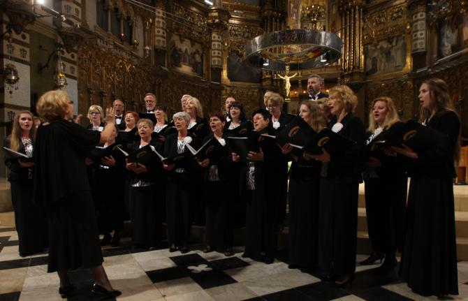
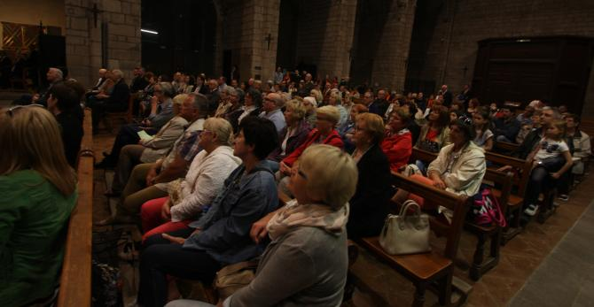

do aktualności
do aktualności25do29-05-2016
Wyjazd do Katalonii był możliwy dzięki wielu sponsorom takich jak firma REGIS Sp. z o.o., Urząd Miasta i Gminy Wieliczka oraz Powiat Wielicki w ramach współpracy z organizacjami pozarządowymia także dzięki Urzędowi Miasta Cardona..
Wyjeżdżamy na lotnisko Katowice - Pyrzowice, potem lecimy do Barcelony !!!
No! już po odprawie. Wszyscy radośnie czekamy na lot.
Jesteśmy na miejscu. Oto nasz hotel „H.Top Pineda Palace” w Pineda de Mar (Costa Brava).Późno już, więc idziemy spać.
Po śniadaniu idziemy zwiedzać okolicę. Zaczynamy od zamoczenia nóg w morzu, bo mieszkamy nad brzegiem morza.
A tak wygląda okolica. Ładnie prawda???
I plaża przy naszym hotelu.
Nóżki bolą, więc trzeba odpocząć, bo zaraz jedziemy do Barcelony.
Zwiedzamy Barcelonę i oczywiście są „faceci” więc jest FCB.
Wsiadamy do autokaru i
jedziemy dalej, podziwiając piękno Barcelony z okien autokaru.
Katedra w Barcelonie Krzyża Świętego i św. Eulalii – cudo
oraz inne piękne miejsca.
Teraz jedziemy na pokaz Magicznej Fontanny i . . . „figa” – odwołany, więc…
Podziwiajmy panoramę Barcelony.
Barcelona może pochwalić się wieloma punktami widokowymi: Montjuic, Tibidabo, Montserrat, Parc Guell…
Widoki są nieziemskie.
I zdjęcie na tle :)
Koniec dnia. Wracamy do hotelu.
Nowy dzień. Dzisiaj wstajemy rześko, idziemy na śniadanko i wyjazd do Tossa de Mar i do Girony.
Idziemy urokliwymi uliczkami podziwiając wszystko.
Teraz zasłużony odpoczynek oraz ich superowy napój (sangria, ale nie taka jak u nas:).
I „skromny” posiłek, czyli "podjadacze".
Odpoczęliśmy, więc pora jechać dalej. Przed nami śliczne miasteczko Tossa de Mar, morze i piękna plaża.
I sama radość na taki widok (mówię o morzu nie o dyrygencie, chociaż też nie głupi widok).
Wszystko co dobre też się kończy a więc zbiórka i liczymy się (nie bawimy się w "Budujemy mosty dla pana starosty":)).
Ponieważ grupa się rozciągnęła (nie wiem czy zgodnie z porzekadłem dyrygenta, że „chór musi być elastyczny”), potrzebny jest drogowskaz , aby nie wyginął, bo kto by jutro śpiewał?
Ale czy taki drogowskaz ? :)
Jest ok wszyscy wrócili do hotelu, nikt nie zaginął w akcji. Dzisiaj robimy wieczór integracyjny a więc wszyscy spotykamy się w kawiarni hotelowej.
My zawsze bawimy się super!
A z nami wszyscy, czyli nasi goście i goście hotelowi.
Czeka nas też niespodzianka, gdyż dzisiaj ma być tutaj wieczór flamenco.
A najlepsze flamenco jest w wykonaniu naszych panów (między innymi).
Koniec wspaniałego, kolejnego dnia. Jutro czeka nas pracowity i ciężki dzień, bo śpiewamy dwa koncerty.
Zaczynamy nowy, kolejny dzień pobytu w Hiszpanii. Dzisiaj już na galowo jedziemy do Montserrat. Jesteśmy na miejscu !!! (nie wiem co napisać, widoki . . . !!!)
A to wszyscy uczestnicy wyjazdu.
Przechodzimy wszyscy do Bazyliki, gdzie dajemy koncert.
Chwila oczekiwania i . . .
Nasz chór, pod dyrekcją Izabeli Szoty zaprezentował koncert polskich pieśni sakralnych dla setek międzynarodowych turystów w Bazylice OO. Benedyktynów w Montserrat – wspaniałym Sanktuarium Maryjnym położonym wysoko w górach, słynącym z kultu figury Matki Boskiej tzw. Czarnulki. Występ chóru Camerata został bardzo entuzjastycznie przyjęty.

Szczęśliwi po koncercie robimy zdjęcie pamiątkowe.
Chwila na przebranie i jedziemy dalej, do Cardony. Jesteśmy przed zabytkową kopalnią soli, ale potasowej.
Zwiedzamy przepiękną kopalnię soli, położoną w Solnej Górze (170m wysokości). Widok jak na filmie s.f.
Wchodzimy do środka a tu czeka niespodzianka hahaha .
Musicie przyznać, że wyglądamy SUPER :)
Wchodzimy do środka i szok. To nie wygląda jak kopalnia, tylko jak jaskinia – cudna.
Nie bylibyśmy chórem, żeby nie zaśpiewać, więc śpiewamy (biedne nietoperze).
Wracamy. Przejazd jest specjalną „bryką”, trochę się kurzy :), ale lepiej źle jechać niż dobrze iść (zwłaszcza pod górę).
Teraz idziemy zwiedzać zamczysko, podobno nawiedzone, ale ładne.
Duchów nie było (przynajmniej widać), ale zaczęło lać (burza). Po półgodzinnym oczekiwaniu aż da się coś zobaczyć w ścianie deszczu, jedziemy na koncert.
Występujemy jako GOŚĆ IV Festiwalu „Cardona Canta”. Zaczynamy od krótkiej rozśpiewki.
A teraz szybciutko zobaczyć miasteczko.
Wracamy i co widzimy… pełny kościół słuchaczy. To cieszy chyba wszystkich.

Zaczynamy występ. Dyryguje Izabela Szota, chór śpiewa przy akompaniamencie Marii Rydzewskiej.
Na skrzypcach gra Jadwiga Korab Chrzanowska, uczennica Szkoły Muzycznej I st. w Wieliczce przy akompaniamencie Marii Rydzewskiej.
Jako solistka (z hiszpańskim utworem) występuje Izabela Szota – sopran, przy akompaniamencie Marii Rydzewskiej – fortepian.
Zachwycona publiczność daje nam brawa na stojąco. Koncert prowadziła jak zawsze Izabela Szota. W tłumaczeniu pomagał (z różnym skutkiem) przewodnik Irek.
Na koniec, trzy chóry: Camerata, Coral Cardonina i Escolania de Sant Miquel, występują wspólnie śpiewając Gaude Mater Polonia pod dyr. Izabeli Szoty,
pieśń katalońską oraz hymn napisany z okazji odparcia przez Cardonę wojsk napoleońskich pod dyr. Ovidi de Cardona.
Jeszcze zdjęcia pamiątkowe.
Koncert zaśpiewaliśmy cudnie. Pochwała wielka od dyrygenta (a to się rzadko zdarza, żeby nie było uwag). Wracamy zmęczeni, ale szczęśliwi do hotelu.
„Ostatni dzień w Barcelonie…”
Zobaczmy Sagradę Familię - to słynna, niedokończona katedra projektu Gaudiego. Jest w budowie od ponad 130 lat, a gotowa ma być w 2026 roku. Niech Was nie zniechęcą rusztowania i żurawie! To miejsce, mimo, że nie dokończone, robi ogromne wrażenie. Do tej pory wzniesiono 8 z 18 zaplanowanych wież. Po ukończeniu budowy Sagrada Familia stanie się najwyższym kościołem świata! A więc głowy w górę i oglądamy.
O jaki piękny park Ciutadella.
Zwiedzamy dalej.
I oto Magiczna Fontanna, którą mieliśmy oglądać wieczorem po przyjeździe. Miała być woda, światło, dźwięk. Teraz widzicie samą budowlę, a że macie dusze artystyczne i bujną wyobraźnię, to reszta w Waszych rękach a właściwie głowach.
I to był ostatni dzień w Barcelonie. Wracamy do domu.
Galeria zdjęć z Barcelony.
Barcelona
do aktualności


 Prowadzenie strony: Małgorzata Wysocka-Cebula
Prowadzenie strony: Małgorzata Wysocka-Cebula